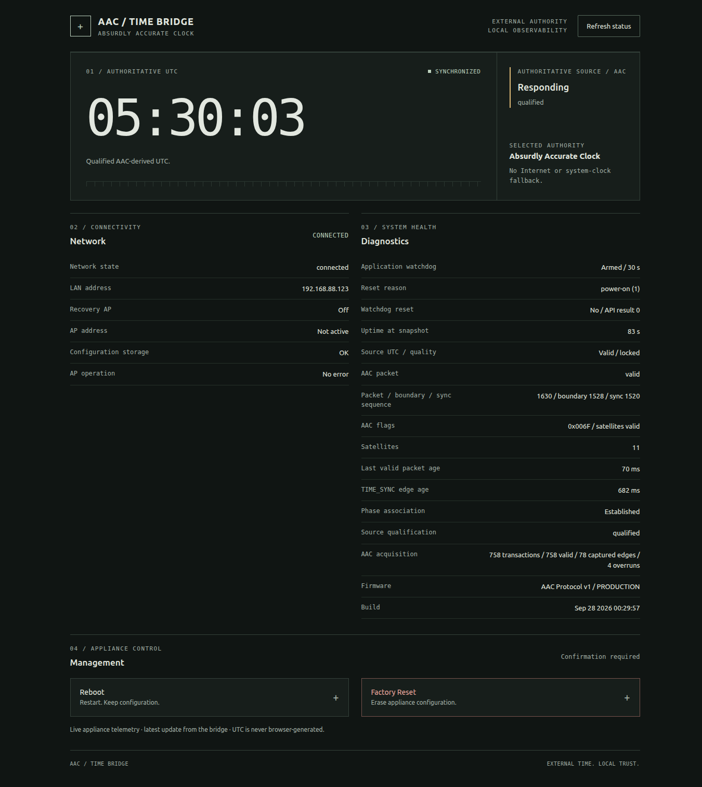

AAC Time Bridge

Overview
AAC Time Bridge is a standalone ESP32 network-time appliance and companion to the Absurdly Accurate Clock. It runs on a NodeMCU ESP-32S / ESP-WROOM-32 and gives devices on the infrastructure LAN access to time received from the clock’s Pico 2 / RP2350. The clock remains the sole authoritative source. Time Bridge is a read-only consumer: it does not set or discipline the Pico, and it does not substitute its own wall clock, a browser clock, or an Internet time service when AAC time is unavailable.
The engineering boundary is the handoff between a qualified timing source and ordinary network services. The ESP32 validates AAC Protocol v1 snapshots, associates them with the source’s TIME_SYNC timing boundary, and keeps one centralized appliance state for the NTP service, WebUI, serial diagnostics, and status indicator. If that source relationship cannot be trusted, the appliance stays operational but reports itself as UNSYNCHRONIZED.
System Architecture
This diagram shows the authoritative time path from the Absurdly Accurate Clock through the qualification boundary and AAC Time Bridge to LAN NTP distribution.
Authoritative time and qualification
The AAC clock-source endpoint is the SPI peripheral; the ESP32 is its SPI controller. AAC Protocol v1 is a read-only 40-byte snapshot with an ACT1 signature, version and length fields, quality flags, packet/boundary/synchronization sequences, UTC seconds, and CRC-32. The controller clocks it in SPI mode 1 at 100 kHz with zero-valued MOSI bytes. Chip select selects an immutable published snapshot, so one transfer cannot mix fields from different publications. The source protocol is maintained by the Absurdly Accurate Clock project; this repository carries a synchronized copy for the consumer implementation.
A packet alone does not establish a usable time reference. The ESP32 timestamps each rising TIME_SYNC edge, waits for the required post-edge publication interval, then reads and pairs the resulting snapshot with that edge. The packet's sync_delay_us relates TIME_SYNC to the corresponding authoritative UTC/PPS boundary. A snapshot is accepted only if the transaction was not raced by another edge. Qualification requires UTC_VALID, PPS_PRESENT, PPS_LOCKED, and SYNC_VALID, a clean edge relationship, and continuous boundary and synchronization sequence progression. Repeated reads do not count as new seconds.
The accepted UTC anchor is checked again when consumed and expires if no qualifying edge arrives within 1.5 seconds. Invalid packets or flags, sequence gaps, ambiguous edge pairing, transport failures, or a Pico reset clear the selected anchor and return the state to UNSYNCHRONIZED. A zero epoch with UTC_VALID clear is an invalid sentinel, not a date. No holdover is implemented. TIME_SYNC is a software-delivered boundary reference with a measured source-side delay field; it is not a zero-latency copy of GPS PPS. The bridge reports source qualification and protocol-derived timing state; it does not claim independently measured absolute UTC accuracy.
LAN network-time service
When station Wi-Fi has a usable LAN address, the appliance listens for basic NTP v3/v4 requests on UDP port 123, bound to that infrastructure address. It derives NTP timestamps from the qualified TIME_SYNC-linked UTC and monotonic-time anchor; it never reads the ESP32 wall clock. Qualified replies use stratum 1 and the reference ID AAC , reflecting their direct reference to the GPS-disciplined clock.
When AAC authority is absent, replies explicitly signal unsynchronized status: LI=3, stratum 16, reference ID INIT, and zero reference, receive, and transmit timestamps. The client’s originate timestamp is still echoed. Qualification is checked for each request, so loss of source authority withdraws valid time and a later qualified relationship can restore it. The setup/recovery access point does not expose NTP.
On 2026-09-28, a LAN characterization recorded qualified stratum-1 responses for 100 of 100 requests. Client/server NTP offset measured during this LAN test, relative to a T470 system clock, ranged from −2.458 to +81.181 ms; mean offset was +34.915 ms. That is a functional LAN test against that host, not an absolute UTC error measurement. Independent measurement against the AAC/GPS PPS boundary remains outstanding.
WebUI and appliance state
The local single-page WebUI presents a snapshot of clock qualification, source/phase/sequence diagnostics, network state, reset and watchdog details, build identity, and uptime. Its /telemetry endpoint returns the latest bounded appliance snapshot about once per second. Each response rechecks whether the AAC-derived UTC anchor is still qualified. The browser formats the returned UTC second; it does not advance time locally, and the displayed time clears when authority is invalid or a telemetry request fails.
The same centralized state feeds the WebUI, serial reporting, and GPIO16 status indicator. This keeps indicators and diagnostics as consumers of appliance state instead of separate time authorities. The indicator distinguishes normal LAN operation with qualified AAC time, a responding but unqualified source, an unavailable source, and network/recovery-AP conditions.
Provisioning, failure, and recovery
With no stored Wi-Fi credentials, the appliance starts an open setup access point named AAC-Bridge-XXXXXX at 192.168.4.1. An operator enters the target 2.4 GHz network credentials in the local page; the form also supports hidden SSIDs. After the ESP32 joins the infrastructure network and has a LAN address, it announces that address over Serial and shuts down the setup AP. With saved credentials it tries station mode first, retries connection, and starts the recovery AP after 60 seconds disconnected. Successful reconnection turns the AP off without erasing credentials. Wi-Fi failure does not make the clock valid or request a reboot.
Normal reboot and factory reset are explicit POST management actions. Reboot preserves stored configuration. Confirmed factory reset clears the appliance-owned configuration namespace and returns to setup; a storage error is reported without scheduling the reset. An emergency serial factory-reset path is also documented. These are service controls, not alternate time-recovery mechanisms.
The 30-second application task watchdog is fed only after a complete application poll pass. Source loss, invalid time, and Wi-Fi outages do not deliberately trigger it. Following any reset, clock authority and edge association start untrusted and must be qualified again from AAC. Watchdog integration is implemented; explicit deliberate-wedge recovery testing remains to be completed.
Implementation and validation
The repository records hardware exercise of the v1 SPI/TIME_SYNC path on a production NodeMCU ESP-32S: ACT1 packet and CRC validation, AAC authority and quality qualification, phase association, and sequence progression were confirmed. Operator bench checks also covered first-time open-AP provisioning, joining the LAN, normal web reboot with configuration retained, confirmed factory reset back to setup, and reprovisioning.
Host tests cover protocol vectors and corruption rejection, qualification policy, state rendering, and bounded transport behavior. The repository’s LAN NTP test establishes request/reply behavior and observed network timing for that setup, but absolute timing error against the physical AAC/GPS boundary remains unqualified. The latest live telemetry UI and diagnostic-cadence changes still need browser and serial bench checks, and watchdog recovery still needs hardware validation.